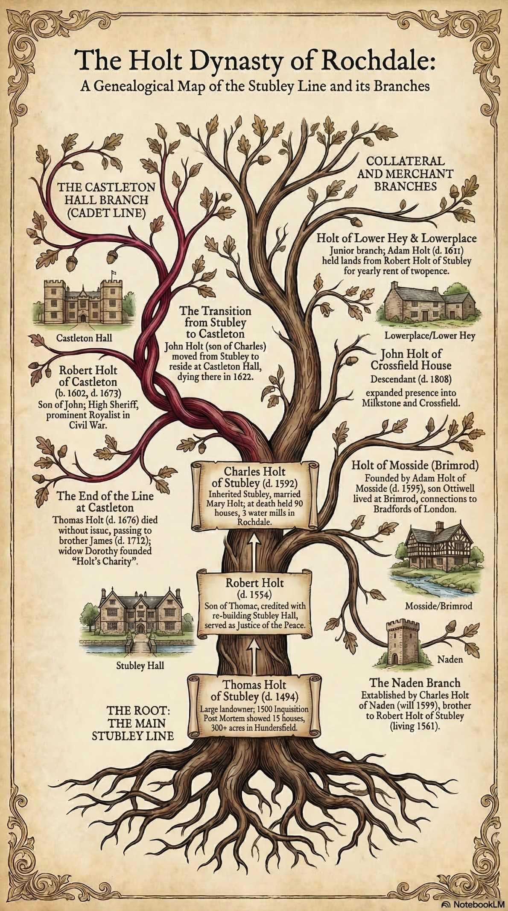
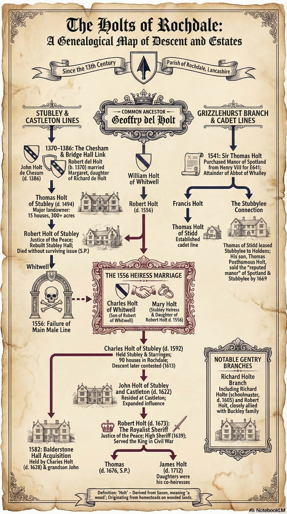

The History of the Parish of Rochdale
This section presents a chronological summary of references to the Holt family found in The History of the Parish of Rochdale by Henry Fishwick(1889). The history of the Holt families (also recorded as Holte or Hoult) in the Parish of Rochdale is a chronicle of a dominant gentry lineage that split into several powerful branches, including Stubley, Castleton Hall, Grizzlehurst, Ashworth Hall, and Stubbylee. Their trajectory reflects the broader social and economic shifts of Lancashire, moving from medieval feudal landholding to high-status political roles and eventually into the industrial age as woollen manufacturers and merchants.
The Early Plantagenets (1154–1399)
- Though the Holts are not yet the primary figures, the foundation of their future domain is established when Sir Henry Saville conveys the wastes of Spotland to the Wolstenholmes for a rental that eventually became “a red rose and a pepper corne”.
- Nicholas de Stobbeley appeared as a witness to a local charter, marking the earliest recorded connection of a family to the estate that would later become the primary seat of the Holts. This shows the ancient origins of the Stubley estate within the township of Hundersfield during the late 13th century. It is believed that the Holts aquired Stubley Hall fromthis family.
- Hugh de Holt and his wife Marie conveyed their lands in Whyteworth to the Abbot of Whalley.
- John del Holt served as a juror at an Inquisition at Clitheroe.
- Henry, son of Thomas of the Holt, was fined at the Rochdale Manor Court for defective service; surety William of the Bridges.
- John del Holt and his son Roger held a tenement in Honresfield.
- John Holt of Chesham (Chesham in Bury parish) died; leaving his son Geoffrey as his heir. His son Robert del Holt later married Margaret, daughter of Richard de Holt.
- John de Holte served as a sponsor for the baptism of John Radcliffe at Medowcroft.
The Houses of Lancaster and York (1399–1485)
- James del Holt held the significant political office of King’s escheator for Lancashire. In this role, he was responsible for seizing lands on behalf of the Crown, including those of such as Henry Dernelegh.
- James del Holt stood bail for adherents of the Lollard movement.
- Robert Holt of Chesum and his brother, James Holt, and Sit John Holt, preist, were named as parties involved in the matrimonial scandal and legal negotiations of Thomas Howarth.
- A charter was granted to James del Holt for the Balderstone Hall estate, which included provisions for its descent to his heirs and the family of Elie Buckley.
- Henry Merland, the vicar of Rochdale, re-conveyed lands to James del Holt and his wife Alienor, securing their title to substantial Castleton properties.
- John Holt was recorded as holding a tenement called "Litlworkdell" (Little Wardle) from John, Duke of Lancaster.
- The Crown issued a precept to the escheator to seize lands in Honoresfield and Spotland that Robert del Holt had occupied without a license following his grandfather's death.
- Letice, the daughter of Roger Holt, was recorded as the wife of Henry Howarth, linking the Holts to another ancient local family.
- Robert Holte of Ashworth and his son Robert were named as "verie good friends" and overseers in the will of William Assheton of Clegg.
- Letice, the daughter of Roger Holt, was recorded as the wife of Henry de Howarth, linking two ancient local families through marriage.
- Alice Holt married into the Chadwick family of Healey Hall.
The Tudor Dynasty (1485–1603)
- Thomas Holt died seised in fee of five messuages and 140 acres of land in Little Wardle, which he held of the King by knight's service. His holdings were valued at six marks a year
- Thomas Holt of Stubley (probably the son of Geoffry Holt) died on March 23rd, leaving his thirteen-year-old son Robert as his heir and a ward of James Stanley. Thomas was a massive landowner, holding 15 houses and over 300 acres in Hundersfield directly from the King.
- Henry Holt, a member of the Balderstone branch, died without male issue, triggering a protracted legal battle over his 500 acres of land. The dispute involved his daughters and their husbands.
- Adam Holt, described as "of ye Castleton, gentleman," enfeoffed his lands for the use of his sons William, Thomas, Richard, and Rauf. Robert Holt of Stubley was assessed at £100 in lands, identifying him as one of the wealthiest individuals in the Rochdale parish. During the same subsidy, Adam Holte was taxed for his .
- Robert Holt of Stubley exercised local leadership by moving the freeholders to grant land for the construction of Whitworth Chapel.
- Robert Holt of Stubley exercised religious and social leadership by moving the local freeholders to grant land for the construction of Whitworth Chapel
- Dominos Thomas Holt was named as the priest of Whitworth in a Subsidy Roll and he answered the visitation of about it in 1547.
- Henry VIII disbanded all Catholic monasteries, priories, convents, and friaries in England, Wales, and Ireland and seized their wealth.
- Thomas Holt of Grizzlehurst purchased the Manor of Spotland and lands in Whitworth from the Crown for £641 16s. 8d. following the dissolution of Whalley Abbey.
- Robert Holt of Stubley famously resisted the military muster of Sir John Byron, declaring that none of his tenants should serve under the King's steward. Edmund Entwissell described as a servant of Robert Holt. Sir John Byron appeared in the duchy coutry against Thomas Holt Esq. and others as one of his conditions of stewardship was that he was to furnish all the men he could and put in readiness to server the king. He travelled in person to Rochdale to meet Robert Holt of Stubley Etq.
- Thomas Holt of Grizzlehurst and his wife were violently attacked with arrows by James Gartsyde during a riot over land at Longfield.
- Jane, the daughter of Richard Holt, was enfeoffed of lands called Starringe by Robert Butterworth.
- Robert Holt of Stubley (the elder) died, having served as a Justice of the Peace and being credited with the rebuilding of Stubley Hall. His will left heirlooms like satin doublets and heavy pewter vessels to remain at the hall.
- Robert Holt , Robert Holt of Lower Place and Chares Holt were freeholders, 3 of 8 in the township of Castleton was held 205 acres. Robert Holt of Stubley (the nephew and heir) died seised of a vast estate of 4,000 acres and 80 houses, which he entailed to the Whitewall branch. He left the Starring estate to Charles Holt on the condition that he marry Robert's daughter Mary, effectively uniting the family's main lines. Charles Holt of Stubley appeared as a plaintiff in the Duchy Court against Edward Butterworth regarding the possession of Stubley and Starringes.
- Sir Thomas Holt of Grizzlehurst, a man of great might in those parts, was charged by Sir John Byron with retaining manorial rentals for twenty years.
- Robert Holt of Stubley (father of Charles) died, leaving an inventory that revealed a wealthy estate including "lomes" (heirlooms) and wainscotting timber. His will ensured that farming implements and household goods remained at Stubley for his heir.
- Francis Holt, gentleman, asserted his status as a manorial lord by holding a court baron for the manor of Spotland at "Nattworthe".
- Francis Holt, Esq., laid a claim in the Duchy Court to five hundred acres of land and three water mills across Bury, Spotland, and Honoresfield.
- Francis and Ralph Holt were involved in a disputed foot-race wager at Whitworth, where the stakes were twenty nobles a side. Robert Holt of Ashworth Hall dies.
- Charles Holt of Stubley acquired 72 acres of land in Balderstone from John and Robert Talbot.
- John Holt, of the Stubley line, purchased Balderstone Hall from Peter Heywood, marking the family's official takeover of this ancient seat. This hall would later serve as a primary residence for several family members in the 17th century.
- Francis Holt of Grizzlehurst and his son Thomas granted a lease of Marled Earth in Wardle to John Warberton.
- Charles Holt of Stubley was reported as being owner of some land at Wolstenholme.
- Thomas Holt of Grizzlehurst took land above Leavengreve, further expanding his holdings in the Healey district.
- Francis Holt of Grizzlehurst sued Thomas Heley for homage and rent, claiming the disputed premises were held of him by feudal service.
- Charles Holt of Stubley died, leaving the ancient mansion and ninety houses to his son John Holt. Before his death, he had enfeoffed his lands to ensure a smooth transition of the family’s inheritance to the next generation.
- Adam Holt of Mosside died, leaving personal effects valued at a modest £37 to wife Margaret and mentioning his children in his will.
- David, Thomas, and Raph Holte violently assaulted Sir John Byron's servants in the Rochdale market place with swords, rupies and daggers over a cattle distraint. Charles Holt of Naden dies.
- The Lay Subsidy records John Hoult and Marie his mother and Adam Hoult as substantial freeholders paying heavy taxes in Hundersfield and Castleton respectively.
Robt Holte in lands, value xx.li;
Gilbt Holte in lands, value iij.li. vj.s viih.d;
Henr. Holte de Fyldehouse in lands, value iij.li vj.s viij.d;
Adam Holt in lands, value cl.s.
Honersfeld – Robart Holte Squyer one of The Comyssyoners for xl.li in lands – xi.s.
Castylton – Adam Holte for xx.li in goods value x.s.
Hunderfiled- John Hoult and Maries his mother in lands , value c.li c.s;
Castleton – Adam Hoult in lands , value xl.s viij.s.
The Stuart Monarchs (1603–1714)
- Richard Holte of the Ashworth Hall branch, a married man and held an interest in property in Spotland, who served as the master of the Rochdale Grammar School, was buried. He was a man of education, leaving a library of scholarly books and specific bequests to his associates and the vicar. To James Holt of Rochdale he left a bible, a greek lexicon and Thomas latin Dictionary.
- Thomas Holt of Stidd (son of Francis of Grizzlehurst) confirmed a lease of Stubbylee. This branch held Stubbylee for several decades before financial difficulties eventually forced its sale.
- John Holte died, leaving Balderstone Hall to his son.
- Anthony Holt of Spotland, nephew of Ottiwell Holt of Brimrod in Castleton. left a will with legacies Jane Holt sister of Ottiwell Holt who was married to Edward Newbold. She left her legacy of iis and bequests to each of 3 sons.and the Newbolds of Newbold
- Adam Holt of Lower Place, grandson of Robert Holt was buried in Rochdale.
- Adam Holt of Lower Place died, leaving a "capital messuage" and land in the wastes of Castleton. He directed that £400 be raised from his estate for the use of his daughters. One pore scholar from Rochdale school to Cambridge by order of Mr. Holte
- John Holt of Stubley died at Castleton Hall. His son Robert inherited the expanding family empire. Edward Holt , gentleman, has a house in southern Wardleworth in hereted from Ottiwell Smith of London , merchant.
- Francis Holt paid a fine for land on Knowlmore following the death of Charles Holt. Katherine Holt, late wife of Francis Holt, paid a fine for land called Nabroid near Brown Wardle.
- The Manor Survey recorded Robert Holt at the "fayre mansion" of Castleton Hall and Theophilus Holt holding 2,382 acres in Brandwood said to be worth £244 a year and he also had a water cornmill..
- Charles Holt of Balderstone Hall died seised of the hall and a watermill, leaving his seventeen-year-old grandson John as his heir. A child of Roger Holt of Deepleach Hill was buried at the parish church, providing a record of the family's secondary branches.
- Robert Holt of Castleton reached a peak of political influence by serving as the High Sheriff of Lancashire. In this role, he was responsible for the controversial collection of ship-money for the King, taking his reports directly from Castleton Hall.
- As a staunch Royalist and supporter of Lord Derby, Robert Holt was discharged from the commission of the peace by Parliament.
- Following the Parliamentary victory, Robert Holt was forced to compound for his estates, paying a fine of £150.
- John Holt of Deeplishill died, and his will was proved at Chester, indicating the family's continued presence in that part of the parish.
- Roger Holt was described in the Church Registers as being of Bank House, representing the family's connection to that estate.
- Thomas Posthumous Holt of Grizzlehurst leased coal mines in Brandwood. This lease was made in the Whitworth Chapel porch.
- Faced with mounting financial pressure, Thomas Posthumous Holt sold the Stubbylee estate to Edmund Barker.
- Robert Holt of Castleton died, leaving a will that detailed his "armour pistoles" and brewing utensils.
- Thomas Holt, the eldest son of Robert, died without issue, and the Castleton estates passed to his brother James Holt.
- John Holt sold Broadhalgh Mill to Abel Ashworth, signaling a further reduction in the family's outlying manorial holdings.
- James Holt of Castleton Hall served as a Justice of the Peace. He was a man of learning, having been educated at Oxford and serving as a fellow of Brasenose College.
- Charles Holt and his wife were associated with Bank House, with their initials and the date 1694 engraved on the fireplace.
- Daniel Holt, brother of Roger of Bank House, was recorded as the owner and resident of the Greave estate.
- James Holt, the last male heir of the Castleton branch, died at York, leaving four daughters with settlements of £1,500 each. His death ended the direct male line of the most powerful Holt branch, eventually leading to the sale of their estates. Richard Holt released Balderstone Hall to his sons Thomas and Richard, who were successful London merchants.
Tax for raising money by poll, payable quarterly for one year, for carrying on a vigorous war against France.
A tabler (lodger / border) with Abraham Holt, amount £0 1s 0d
Wm. Holt and his wife, amount £0 2s 0d
Ed’ Holt, his wife and one child , amount £0 3s 0d
Robt’ Holt and is wife , amount £0 2s 0d
The Georgian and Victorian Eras (1714–1901)
- Dorothy Holt of Castleton Hall left £120 in her will to establish Holt's Charity for the education of poor girls.
- Dorothy Holt, widow of James, died; she was the founder of Holt’s Charity, which educated poor girls in Castleton and Rochdale. Her philanthropic legacy funded the education and clothing of children at the National School for many years.
- John Holt, the son of Robert Holt of Lower Place, was baptized. This line remained active in the local community as landowners and merchants into the industrial age.
- John Holt of Lower Hey died and was buried at Rochdale. His descendants continued to hold lands in the parish, bridging the gap between the old gentry and the new commercial class.
- John Holt of Toad Lane married Susan Wolfenden, demonstrating the family's continued integration into the social life of the town.
- Valentine Holt executed at Penrith for part of 1745 rebellion having joined in Manchester.
- Robert Holt of Lowerplace died at the age of seventy-seven, having lived through the early industrial transition.
- Thomas Holt died on August 6th at the age of 72, followed later by his wife Martha in 1783.
- Francis Holt of Lowerplace, a successful merchant, died at the age of 76. James Holt of Greave was buried at Rochdale at the age of eighty-nine, marking the end of a long career as a significant landowner.
- James Holt, a woollen manufacturer, purchased the Stubbylee estate from the Holden family.
- John Holt of Toad Lane was buried at Rochdale, leaving a will proved at Chester that detailed his property and legacies.
- Richard Holt, attorney, died.
- John Holt of Crossfield House died at the age of sixty and was buried in the parish. Robert Holt of Lowerplace died without issue, and his estates were subsequently distributed among his heirs.
- Holt purchased tithes of Rochdale and Saddleworth
- The ancient building known as "The Holt" in Butterworth was almost entirely demolished, having fallen into a state of decay. This property was considered the possible Saxon root for the family name in the district. Mr Holt of Chamber House had purchased at some point and owned by Richard Orford Holt, the farmhouse.
- Robert William Francis Holt was the grandson of Robert Holt of Crossfield and later served as a lieutenant-colonel of Royal Marines.
- Rochdale Equitable Pioneers Society was established.
- Robert Holt of Chamber House purchased the Little Clegg estate, demonstrating the family's continued role as major landholders. The Holts remaining active in the Rochdale parish land market late into the 19th century.
- Richard Orford Holt was noted as last of his line.

